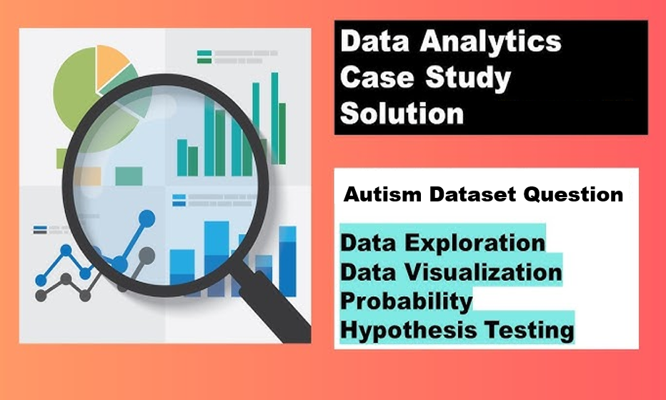

![]()

Project Instructions
You will work with the child.csv file, which is a modified dataset adapted from the autism dataset available on Kaggle. This dataset contains attributes/variables for several children who were tested for autism.
Your task is to perform the following data analysis activities using R. If any data preparation steps cannot be accomplished using R, describe your alternative approach and complete the rest of the analysis in R.
Autism Data
To follow along with this tutorial, you can download the dataset below:
Import Required Packages
# Ensure your computer is connected to the internet!
packages_needed <- c(
"tidyverse", "vtable", "inspectdf", "knitr",
"kableExtra", "gt", "patchwork", "treemap"
)
if (!require(install.load)) {
install.packages("install.load")
}
install.load::install_load(packages_needed)
theme_set(theme_bw())Data Preprocessing
Import the Dataset
child_data <- read_csv("child.csv")The code below cleans the dataset by removing any whitespace and apostrophes from character variables.
clean_data <- child_data %>%
mutate(across(where(is.character), ~ str_squish(str_remove_all(., pattern = "'")))) %>%
mutate(across(5:11, as.factor))
clean_data <- clean_data %>% mutate(
autism = fct_relevel(autism, "YES"),
autismFH = fct_relevel(autismFH, "yes")
)Descriptive Analysis
You can generate a detailed summary of the dataset variables using vtable.
label <- data.frame(
score = "A numeric value from the standard tests for autism",
score2 = "A numeric value from alternative (non-standard) tests for autism",
age = "The child’s age",
cost = "Total cost of testing the child (in pounds)",
gender = "Gender (male or female)",
ethnicity = "Child’s ethnicity",
jaundice = "Whether the child was born with jaundice",
autismFH = "Family history of autism",
residence = "Country of residence",
relation = "Who completed the test for the child",
autism = "Autism diagnosis (YES or NO)"
)
vtable(clean_data, labels = label, factor.limit = 5)
Autism Dataset Overview
| score | score2 | age | cost | gender | ethnicity | jaundice | autismFH | residence | relation | autism |
|---|---|---|---|---|---|---|---|---|---|---|
| 4.6 | 4.4 | 5 | 1170.0 | m | Others | no | no | Jordan | Parent | NO |
| 4.4 | 4.4 | 5 | 1090.0 | m | Middle Eastern | no | no | Jordan | Parent | NO |
| 4.8 | 4.3 | 5 | 1130.0 | m | NA | no | no | Jordan | NA | NO |
| 3.6 | 3.6 | 4 | 980.0 | f | NA | yes | no | Jordan | NA | NO |
| 9.7 | 9.5 | 4 | 2475.0 | m | Others | yes | no | United States | Parent | YES |
| 4.9 | 4.5 | 3 | 1315.0 | m | NA | no | yes | Egypt | NA | NO |
| 7.3 | 7.1 | 4 | 1815.0 | m | White-European | no | no | United Kingdom | Parent | YES |
| 7.5 | 7.1 | 4 | 1955.0 | f | Middle Eastern | no | no | Bahrain | Parent | YES |
| 6.7 | 6.4 | 2 | 1665.0 | f | Middle Eastern | no | no | Bahrain | Parent | YES |
| 5.9 | 6.2 | 2 | 1445.0 | f | NA | no | yes | Austria | NA | NO |
| 6.8 | 7.0 | 1 | 1760.0 | m | White-European | yes | no | United Kingdom | Self | YES |
| 3.6 | 3.5 | 4 | 880.0 | f | NA | no | no | Kuwait | NA | NO |
| 9.0 | 9.4 | 3 | 2300.0 | m | White-European | yes | no | United States | Parent | YES |
| 1.6 | 2.1 | 3 | 370.0 | f | Black | no | no | United Arab Emirates | Parent | NO |
| 15.0 | 14.0 | 5 | 3840.0 | m | White-European | no | no | Europe | Parent | YES |
| 10.0 | 10.0 | 7 | 3267.5 | m | White-European | no | no | Malta | Parent | YES |
| 8.5 | 8.7 | 3 | 2205.0 | m | South Asian | no | no | Bulgaria | Parent | YES |
| 0.5 | 0.0 | 6 | 2557.5 | m | Others | no | no | United States | Parent | NO |
| 7.5 | 8.0 | 2 | 1915.0 | m | White-European | no | yes | United States | Parent | YES |
| 7.7 | 8.1 | 4 | 1865.0 | m | NA | no | no | Egypt | NA | YES |
| 7.5 | 7.6 | 4 | 1875.0 | m | White-European | yes | no | South Africa | Parent | YES |
| 4.7 | 5.1 | 8 | 2830.0 | f | NA | no | no | Egypt | NA | NO |
| 2.4 | 1.9 | 3 | 660.0 | m | Asian | no | no | India | Parent | NO |
| 5.6 | 5.7 | 5 | 1470.0 | f | South Asian | no | no | India | Parent | NO |
| 7.8 | 8.0 | 2 | 1970.0 | m | NA | no | no | Egypt | NA | YES |
| 6.6 | 6.7 | 5 | 1620.0 | m | White-European | no | yes | United Kingdom | Relative | NO |
| 6.3 | 6.7 | 5 | 1515.0 | f | Middle Eastern | no | no | Afghanistan | Self | NO |
| 10.0 | 10.0 | 4 | 2560.0 | m | White-European | yes | no | United States | Parent | YES |
| 4.4 | 4.6 | 5 | 1190.0 | m | NA | no | yes | United Arab Emirates | NA | NO |
| 3.4 | 3.9 | 3 | 850.0 | f | Others | yes | yes | Georgia | Parent | NO |
| 10.0 | 10.0 | 2 | 2450.0 | m | White-European | no | no | United Kingdom | Parent | YES |
| 3.6 | 3.1 | 5 | 980.0 | m | Pasifika | yes | no | New Zealand | Parent | NO |
| 7.0 | 6.9 | 9 | 3025.0 | m | NA | no | no | Egypt | NA | YES |
| 5.8 | 6.0 | 4 | 1540.0 | m | South Asian | yes | no | India | Care professional | NO |
| 5.3 | 5.4 | 5 | 1325.0 | m | South Asian | yes | no | India | Parent | NO |
| 1.5 | 1.8 | 6 | 2625.0 | f | Middle Eastern | yes | no | Syria | Parent | NO |
| 3.0 | 3.4 | 3 | 780.0 | f | NA | no | no | Syria | NA | NO |
| 1.4 | 1.7 | 6 | 2627.5 | m | Asian | no | no | New Zealand | Parent | NO |
| 10.0 | 10.0 | 3 | 2510.0 | m | White-European | yes | no | United Kingdom | Parent | YES |
| 8.1 | 7.6 | 3 | 1965.0 | m | Asian | no | no | India | Parent | YES |
| 6.9 | 7.2 | 4 | 1725.0 | m | NA | yes | no | Jordan | NA | NO |
| 0.4 | 0.2 | 3 | 30.0 | m | Middle Eastern | no | no | Afghanistan | Parent | NO |
| 4.3 | 4.8 | 5 | 1045.0 | f | Middle Eastern | no | no | Jordan | Parent | NO |
| 7.6 | 7.5 | 3 | 1890.0 | f | NA | no | no | Jordan | NA | YES |
| 2.7 | 3.2 | 1 | 605.0 | m | Middle Eastern | no | no | Jordan | Parent | NO |
| 5.9 | 5.9 | 3 | 1535.0 | f | Middle Eastern | yes | no | Iraq | Relative | NO |
| 4.0 | 3.5 | 3 | 920.0 | f | Middle Eastern | yes | no | Iraq | Relative | NO |
| 6.5 | 6.0 | 5 | 1565.0 | m | NA | no | no | Jordan | NA | YES |
| 7.9 | 7.4 | 5 | 2055.0 | f | White-European | yes | no | New Zealand | Parent | YES |
| 2.0 | 1.5 | 6 | 2640.0 | m | Middle Eastern | no | yes | Jordan | Parent | NO |
| 3.8 | 3.4 | 6 | 2790.0 | m | NA | yes | no | Jordan | NA | NO |
| 6.1 | 6.5 | 3 | 1475.0 | m | Asian | no | no | India | Parent | NO |
| 5.6 | 6.0 | 5 | 1360.0 | m | NA | no | no | Jordan | NA | NO |
| 9.4 | 9.7 | 6 | 3192.5 | m | White-European | yes | no | United States | Parent | YES |
| 4.8 | 4.7 | 4 | 1280.0 | m | NA | no | no | United Arab Emirates | NA | NO |
| 1.9 | 2.3 | 4 | 485.0 | m | White-European | no | no | Australia | Parent | NO |
| 1.5 | 1.0 | 5 | 435.0 | m | NA | no | no | Saudi Arabia | NA | NO |
| 9.9 | 9.5 | 3 | 2505.0 | f | White-European | no | no | Georgia | Parent | YES |
| 8.3 | 8.6 | 8 | 3125.0 | f | Middle Eastern | no | no | Armenia | Care professional | YES |
| 7.3 | 6.8 | 3 | 1915.0 | m | Hispanic | no | yes | United States | Parent | YES |
| 3.7 | 3.5 | 3 | 925.0 | m | Turkish | no | no | Turkey | Relative | NO |
| 9.7 | 10.0 | 8 | 3227.5 | m | White-European | no | no | United States | Parent | YES |
| 6.5 | 6.0 | 3 | 1565.0 | f | White-European | yes | no | Australia | Parent | NO |
| 9.3 | 9.7 | 8 | 3175.0 | m | Asian | yes | no | Pakistan | Parent | YES |
| 4.4 | 4.2 | 7 | 2850.0 | m | Middle Eastern | no | no | United States | Parent | NO |
| 1.4 | 1.0 | 9 | 2587.5 | m | Middle Eastern | no | no | Jordan | Parent | NO |
| 3.0 | 3.0 | 3 | 710.0 | m | White-European | no | no | United Kingdom | Parent | NO |
| 4.1 | 4.3 | 3 | 1075.0 | m | White-European | no | no | United Kingdom | Parent | NO |
| 5.8 | 5.7 | 3 | 1410.0 | f | NA | no | yes | Pakistan | NA | NO |
| 9.7 | 9.8 | 3 | 2365.0 | m | White-European | no | yes | Canada | Parent | YES |
| 4.8 | 4.3 | 6 | 2867.5 | m | Asian | no | no | Oman | Parent | NO |
| 4.6 | 4.8 | 6 | 2822.5 | f | White-European | yes | no | United Kingdom | Parent | NO |
| 7.5 | 7.1 | 5 | 1825.0 | m | South Asian | no | no | India | Parent | YES |
| 8.3 | 8.0 | 4 | 2045.0 | f | Middle Eastern | no | no | Canada | Parent | YES |
| 6.8 | 6.7 | 7 | 3015.0 | f | Middle Eastern | no | yes | Canada | Parent | YES |
| 6.0 | 6.0 | 4 | 1490.0 | m | White-European | no | no | United Kingdom | Parent | NO |
| 9.7 | 10.0 | 2 | 2345.0 | f | Others | no | no | Canada | Parent | YES |
| 4.4 | 4.8 | 7 | 2820.0 | m | White-European | yes | no | New Zealand | Parent | NO |
| 9.1 | 8.9 | 3 | 2365.0 | m | Latino | no | yes | Brazil | Parent | YES |
| 5.9 | 6.0 | 6 | 2932.5 | m | White-European | yes | no | New Zealand | Parent | NO |
| 2.7 | 3.1 | 3 | 665.0 | m | White-European | no | no | New Zealand | Parent | NO |
| 9.2 | 9.3 | 6 | 3210.0 | m | White-European | yes | yes | New Zealand | Parent | YES |
| 8.3 | 8.0 | 7 | 3130.0 | m | White-European | no | no | United States | Parent | YES |
| 5.0 | 4.7 | 4 | 1210.0 | m | Asian | no | no | South Korea | Parent | NO |
| 6.0 | 5.8 | 3 | 1500.0 | m | Asian | no | no | India | Parent | NO |
| 9.2 | 9.4 | 2 | 2390.0 | f | White-European | no | no | United Kingdom | Parent | YES |
| 7.1 | 7.3 | 2 | 1735.0 | f | White-European | no | no | United Kingdom | Parent | YES |
| 10.0 | 10.0 | 3 | 2560.0 | m | White-European | no | no | South Africa | Parent | YES |
| 4.9 | 4.6 | 4 | 1135.0 | m | Latino | no | yes | Costa Rica | Parent | NO |
| 8.5 | 8.2 | 5 | 2105.0 | m | Hispanic | no | no | United States | Parent | YES |
| 8.3 | 8.7 | 3 | 2045.0 | f | White-European | no | no | Australia | Parent | YES |
| 5.2 | 5.4 | 2 | 1310.0 | f | White-European | yes | yes | United Kingdom | Relative | NO |
| 7.6 | 7.3 | 4 | 1850.0 | m | Asian | no | no | India | Parent | YES |
| 8.7 | 8.5 | 4 | 2255.0 | m | Asian | no | no | India | Parent | YES |
| 10.0 | 10.0 | 5 | 2530.0 | m | Latino | no | no | United States | Parent | YES |
| 7.1 | 7.3 | 6 | 3052.5 | m | Hispanic | no | no | United States | Parent | YES |
| 8.6 | 8.5 | 2 | 2200.0 | m | White-European | no | no | Sweden | Parent | YES |
| 8.5 | 8.1 | 3 | 2065.0 | m | White-European | no | no | Australia | Parent | YES |
| 8.3 | 8.8 | 3 | 2145.0 | m | White-European | no | yes | United States | Parent | YES |
| 1.9 | 1.4 | 6 | 2635.0 | m | White-European | no | yes | United States | Parent | NO |
| 6.3 | 6.3 | 2 | 1505.0 | f | White-European | yes | yes | United Kingdom | Relative | NO |
| 7.8 | 8.2 | 5 | 2030.0 | f | Asian | no | no | Philippines | Parent | YES |
| 2.9 | 2.9 | 8 | 2740.0 | f | White-European | no | no | United Kingdom | Parent | NO |
| 4.7 | 4.4 | 1 | 1105.0 | m | Others | no | no | United States | Relative | NO |
| 4.4 | 4.1 | 3 | 1110.0 | m | Asian | no | yes | Malaysia | Parent | NO |
| 8.2 | 8.6 | 3 | 2040.0 | m | Asian | yes | no | Philippines | Parent | YES |
| 8.2 | 8.7 | 1 | 2050.0 | m | White-European | yes | no | United Kingdom | Parent | YES |
| 2.4 | 2.5 | 3 | 640.0 | f | White-European | yes | yes | United Kingdom | Parent | NO |
| 4.8 | 4.6 | 2 | 1190.0 | m | Asian | no | no | Argentina | Parent | NO |
| 3.1 | 3.6 | 6 | 2732.5 | m | Asian | no | no | Japan | Parent | NO |
| 6.4 | 6.0 | 4 | 1520.0 | m | NA | no | no | Syria | NA | YES |
| 3.9 | 4.3 | 3 | 955.0 | f | White-European | no | no | United States | Parent | NO |
| 7.1 | 7.2 | 7 | 3012.5 | m | White-European | no | no | United States | Parent | YES |
| 9.7 | 9.8 | 3 | 2435.0 | m | White-European | no | no | Australia | Parent | YES |
| 6.1 | 6.0 | 3 | 1435.0 | m | South Asian | no | no | India | Parent | NO |
| 10.0 | 10.0 | 2 | 2500.0 | m | Asian | yes | no | India | Relative | YES |
| 9.6 | 9.6 | 1 | 2460.0 | f | Asian | no | no | United States | Parent | YES |
| 6.6 | 6.6 | 5 | 1600.0 | f | White-European | no | no | United States | Parent | NO |
| 6.5 | 6.8 | 3 | 1645.0 | m | Asian | no | no | Bangladesh | Relative | NO |
| 4.2 | 4.1 | 3 | 1110.0 | m | Asian | no | yes | Bangladesh | Parent | NO |
| 7.8 | 7.8 | 3 | 1910.0 | m | Asian | no | no | Bangladesh | Relative | YES |
| 4.5 | 4.1 | 1 | 1155.0 | m | White-European | no | no | United States | Parent | NO |
| 9.8 | 10.0 | 6 | 3230.0 | m | White-European | no | no | United Kingdom | Relative | YES |
| 5.1 | 5.2 | 3 | 1285.0 | m | NA | yes | no | Qatar | NA | NO |
| 8.8 | 9.0 | 5 | 2280.0 | f | White-European | yes | no | Ireland | Parent | YES |
| 8.4 | 8.0 | 4 | 2070.0 | m | Asian | no | no | India | Parent | YES |
| 6.8 | 7.2 | 9 | 3010.0 | m | NA | yes | no | Jordan | NA | YES |
| 7.9 | 8.3 | 3 | 1915.0 | f | Asian | yes | no | United Kingdom | Parent | YES |
| 6.5 | 6.9 | 8 | 2985.0 | m | Asian | no | no | India | Parent | NO |
| 7.6 | 7.5 | 3 | 1860.0 | f | White-European | yes | no | United States | Parent | YES |
| 9.2 | 9.2 | 1 | 2300.0 | m | White-European | no | no | New Zealand | Parent | YES |
| 4.0 | 3.6 | 8 | 2792.5 | m | White-European | no | no | New Zealand | Parent | NO |
| 5.9 | 6.3 | 4 | 1565.0 | m | White-European | yes | yes | United Kingdom | Parent | NO |
| 5.9 | 6.4 | 3 | 1475.0 | f | Black | no | no | Canada | Parent | NO |
| 9.8 | 10.0 | 3 | 2500.0 | m | White-European | no | yes | United Kingdom | Parent | YES |
| 4.4 | 4.8 | 5 | 1100.0 | m | White-European | no | no | Romania | Parent | NO |
| 6.9 | 7.1 | 3 | 1695.0 | f | White-European | yes | no | United Kingdom | Parent | YES |
| 0.0 | 0.2 | 4 | -30.0 | f | Hispanic | no | no | United States | Parent | NO |
| 5.6 | 5.1 | 9 | 2927.5 | m | NA | yes | no | Qatar | NA | NO |
| 10.0 | 10.0 | 8 | 3250.0 | m | White-European | yes | yes | United Kingdom | Parent | YES |
| 7.6 | 7.3 | 6 | 3077.5 | f | White-European | no | no | Australia | Parent | YES |
| 6.5 | 6.4 | 1 | 1665.0 | f | White-European | no | no | Netherlands | Parent | NO |
| 6.5 | 6.9 | 3 | 1635.0 | m | South Asian | no | no | India | Parent | YES |
| 7.9 | 8.4 | 3 | 2065.0 | m | Asian | no | no | India | Relative | YES |
| 6.9 | 6.4 | 6 | 3010.0 | f | White-European | no | no | United Kingdom | Parent | NO |
| 8.4 | 8.5 | 3 | 2060.0 | m | Black | yes | no | United States | Parent | YES |
| 5.8 | 6.0 | 3 | 1460.0 | m | NA | yes | no | Lebanon | NA | NO |
| 8.5 | 8.3 | 1 | 2165.0 | m | White-European | no | no | Germany | Care professional | YES |
| 5.8 | 6.2 | 3 | 1520.0 | m | Asian | no | no | India | Parent | NO |
| 3.5 | 3.6 | 3 | 865.0 | m | NA | no | no | Latvia | NA | NO |
| 6.9 | 6.4 | 3 | 1635.0 | m | South Asian | no | yes | Saudi Arabia | Parent | YES |
| 7.6 | 7.2 | 3 | 1910.0 | m | Black | no | yes | United States | Parent | YES |
| 6.5 | 6.1 | 6 | 3000.0 | m | White-European | yes | no | United States | Parent | NO |
| 9.3 | 9.3 | 3 | 2255.0 | m | White-European | no | no | United States | Parent | YES |
| 8.8 | 9.3 | 4 | 2200.0 | f | White-European | no | no | New Zealand | Parent | YES |
| 9.8 | 9.5 | 5 | 2480.0 | m | Others | yes | no | United Kingdom | Parent | YES |
| 6.3 | 6.4 | 5 | 1585.0 | f | Asian | no | no | United Kingdom | Parent | NO |
| 7.6 | 7.9 | 5 | 1870.0 | f | White-European | no | yes | United Kingdom | Parent | YES |
| 7.2 | 7.4 | 8 | 3052.5 | m | White-European | no | yes | United Kingdom | Parent | YES |
| 10.0 | 10.0 | 7 | 3265.0 | m | White-European | no | no | United Kingdom | Parent | YES |
| 7.5 | 7.2 | 2 | 1955.0 | m | NA | no | no | Jordan | NA | YES |
| 7.0 | 7.4 | 8 | 3030.0 | m | White-European | no | no | Australia | Parent | YES |
| 2.7 | 3.1 | 8 | 2692.5 | f | White-European | no | yes | United Kingdom | Parent | NO |
| 7.1 | 7.1 | 6 | 3052.5 | m | Black | no | no | United States | Parent | YES |
| 4.3 | 3.9 | 3 | 1025.0 | m | Asian | no | no | India | Relative | NO |
| 5.1 | 5.5 | 1 | 1235.0 | f | Others | no | no | Australia | Self | NO |
| 3.4 | 3.3 | 7 | 2770.0 | m | Middle Eastern | no | no | United Arab Emirates | Parent | NO |
| 8.5 | 8.3 | 5 | 2145.0 | m | Others | no | no | Australia | Parent | YES |
| 8.3 | 7.8 | 7 | 3120.0 | m | NA | yes | no | Russia | NA | YES |
| 9.1 | 8.9 | 2 | 2285.0 | f | White-European | no | no | Austria | Parent | YES |
| 5.1 | 5.3 | 4 | 1265.0 | f | White-European | no | no | Italy | Parent | NO |
| 3.5 | 3.6 | 3 | 945.0 | f | White-European | no | yes | Australia | Relative | NO |
| 10.0 | 10.0 | 2 | 2550.0 | m | White-European | no | no | Australia | Parent | YES |
| 5.5 | 5.9 | 2 | 1285.0 | f | Others | yes | no | United Kingdom | Self | NO |
| 5.3 | 5.0 | 3 | 1315.0 | m | NA | yes | no | Qatar | NA | NO |
| 4.1 | 4.2 | 7 | 2805.0 | m | White-European | no | no | United Kingdom | Parent | NO |
| 3.4 | 2.9 | 7 | 2735.0 | m | White-European | no | no | United Kingdom | Parent | NO |
| 9.7 | 9.5 | 8 | 3212.5 | m | White-European | no | no | United Kingdom | Parent | YES |
| 3.8 | 4.3 | 3 | 990.0 | m | Asian | no | no | Bangladesh | Parent | NO |
| 6.9 | 6.6 | 3 | 1785.0 | m | Asian | no | no | Bangladesh | Parent | YES |
| 8.3 | 8.4 | 3 | 2095.0 | f | NA | yes | no | China | NA | YES |
| 3.8 | 3.5 | 3 | 1020.0 | f | NA | no | no | Pakistan | NA | NO |
| 8.5 | 8.5 | 2 | 2125.0 | m | Hispanic | no | no | United States | Self | YES |
| 5.7 | 5.8 | 1 | 1335.0 | f | Asian | no | no | Australia | Parent | NO |
| 7.9 | 8.1 | 2 | 1985.0 | m | Asian | no | no | India | Parent | YES |
| 5.5 | 5.6 | 3 | 1455.0 | m | Black | yes | no | United Kingdom | Parent | NO |
| 7.9 | 7.4 | 3 | 1935.0 | m | White-European | yes | no | United States | Parent | YES |
| 9.5 | 9.4 | 5 | 2395.0 | f | Black | no | no | Nigeria | Parent | YES |
| 5.5 | 5.0 | 7 | 2905.0 | m | White-European | no | no | United Kingdom | Parent | NO |
| 9.1 | 9.5 | 3 | 2335.0 | f | White-European | no | yes | Australia | Parent | YES |
| 7.9 | 7.5 | 3 | 1975.0 | m | NA | no | no | Lebanon | NA | YES |
| 7.7 | 7.9 | 7 | 3070.0 | m | White-European | no | no | Armenia | Parent | YES |
| 6.8 | 7.1 | 2 | 1660.0 | m | Hispanic | no | no | United States | Relative | YES |
| 6.6 | 6.8 | 3 | 1650.0 | f | White-European | yes | yes | United Kingdom | Parent | NO |
| 4.9 | 4.7 | 4 | 1255.0 | m | NA | no | no | Iraq | NA | NO |
| 2.6 | 2.7 | 3 | 620.0 | m | White-European | no | no | U.S. Outlying Islands | Parent | NO |
| 7.4 | 7.2 | 7 | 3047.5 | m | Black | no | no | Australia | Parent | YES |
| 6.6 | 6.5 | 3 | 1600.0 | m | Pasifika | no | no | New Zealand | Care professional | YES |
| 9.5 | 9.9 | 3 | 2385.0 | m | South Asian | no | no | India | Parent | YES |
| 3.9 | 3.8 | 8 | 2787.5 | m | White-European | no | yes | Australia | Parent | NO |
| 3.4 | 3.6 | 8 | 2772.5 | m | White-European | yes | yes | Australia | Parent | NO |
| 8.5 | 8.1 | 3 | 2065.0 | f | White-European | no | yes | United Kingdom | Parent | YES |
| 4.4 | 4.7 | 4 | 1020.0 | m | South Asian | no | no | India | Relative | NO |
| 7.4 | 7.5 | 6 | 3052.5 | f | Asian | yes | no | India | Parent | YES |
| 7.7 | 7.4 | 3 | 1975.0 | f | White-European | yes | no | United Kingdom | Parent | YES |
| 5.1 | 5.2 | 4 | 1185.0 | f | White-European | no | no | United Kingdom | Parent | NO |
| 8.7 | 9.2 | 5 | 2185.0 | m | Asian | no | no | Nepal | Care professional | YES |
| 9.9 | 10.0 | 7 | 3252.5 | m | White-European | no | no | United Kingdom | Parent | YES |
| 3.9 | 4.4 | 3 | 925.0 | m | Asian | no | no | Bangladesh | Parent | NO |
| 6.5 | 6.1 | 4 | 1665.0 | m | Latino | no | yes | Mexico | Parent | NO |
| 6.9 | 7.1 | 4 | 1785.0 | m | Latino | no | yes | Mexico | Parent | YES |
| 6.1 | 5.6 | 5 | 1445.0 | m | White-European | yes | no | United States | Parent | NO |
| 5.8 | 6.2 | 3 | 1400.0 | m | NA | yes | no | Malaysia | NA | NO |
| 6.7 | 6.4 | 7 | 3015.0 | m | White-European | no | no | United Kingdom | Parent | NO |
| 5.5 | 5.8 | 4 | 1375.0 | m | South Asian | no | no | India | Parent | NO |
| 9.8 | 9.5 | 3 | 2440.0 | f | Asian | no | yes | United States | Parent | YES |
| 8.7 | 9.1 | 5 | 2165.0 | m | White-European | no | no | Australia | Parent | YES |
| 0.4 | 0.0 | 2 | 150.0 | m | Turkish | no | yes | Turkey | Parent | NO |
| 2.5 | 2.5 | 5 | 665.0 | m | Others | no | no | United Kingdom | Parent | NO |
| 9.0 | 8.6 | 3 | 2160.0 | f | Hispanic | no | no | United States | Parent | YES |
| 10.0 | 9.8 | 7 | 3262.5 | m | White-European | no | no | United States | Parent | YES |
| 7.8 | 7.6 | 3 | 1970.0 | m | White-European | no | yes | United States | Parent | YES |
| 7.6 | 7.8 | 3 | 1870.0 | m | White-European | no | no | United States | Parent | YES |
| 8.2 | 8.1 | 5 | 1990.0 | m | White-European | no | no | United States | Parent | YES |
| 3.5 | 4.0 | 7 | 2775.0 | m | White-European | yes | no | Canada | Care professional | NO |
| 10.0 | 9.8 | 8 | 3260.0 | m | Black | yes | no | United Kingdom | Parent | YES |
| 4.2 | 3.7 | 7 | 2795.0 | f | South Asian | no | no | India | Parent | NO |
| 7.5 | 7.9 | 4 | 1825.0 | m | South Asian | no | no | India | Parent | YES |
| 3.7 | 4.2 | 4 | 885.0 | m | Middle Eastern | no | no | Jordan | Care professional | NO |
| 8.1 | 8.4 | 3 | 2005.0 | m | Asian | yes | no | Isle of Man | Care professional | YES |
| 8.7 | 9.0 | 1 | 2185.0 | m | White-European | no | no | United States | Parent | YES |
| 5.7 | 6.1 | 3 | 1475.0 | m | NA | yes | no | Libya | NA | NO |
| 6.9 | 7.3 | 3 | 1735.0 | m | NA | yes | no | Libya | NA | YES |
| 8.2 | 8.4 | 4 | 1990.0 | m | NA | no | no | Russia | NA | YES |
| 5.3 | 5.0 | 3 | 1385.0 | m | Others | yes | no | Libya | Parent | NO |
| 6.0 | 6.0 | 4 | 1520.0 | m | NA | no | no | Russia | NA | NO |
| 8.6 | 8.6 | 6 | 3160.0 | f | Asian | no | no | Philippines | Parent | YES |
| 5.5 | 5.5 | 2 | 1345.0 | f | Latino | yes | no | Philippines | Care professional | NO |
| 5.0 | 5.2 | 2 | 1260.0 | m | Asian | no | no | India | Parent | NO |
| 5.9 | 5.9 | 2 | 1515.0 | f | White-European | no | yes | Australia | Parent | NO |
| 6.9 | 6.6 | 8 | 3005.0 | m | South Asian | no | no | New Zealand | Parent | NO |
| 5.9 | 6.3 | 5 | 1485.0 | m | South Asian | yes | no | India | Parent | NO |
| 2.5 | 2.2 | 5 | 625.0 | m | NA | yes | no | Saudi Arabia | NA | NO |
| 2.7 | 2.7 | 8 | 2712.5 | f | NA | yes | no | Saudi Arabia | NA | NO |
| 6.0 | 5.9 | 6 | 2967.5 | m | NA | yes | no | Jordan | NA | NO |
| 5.7 | 6.2 | 4 | 1515.0 | m | Middle Eastern | no | no | Jordan | Parent | NO |
| 4.6 | 4.6 | 4 | 1110.0 | m | Middle Eastern | yes | no | United Arab Emirates | Parent | NO |
| 1.8 | 2.0 | 1 | 370.0 | m | Middle Eastern | no | yes | United Arab Emirates | Parent | NO |
| 3.6 | 4.1 | 6 | 2787.5 | m | Middle Eastern | no | no | Jordan | Parent | NO |
| 6.1 | 6.1 | 8 | 2947.5 | m | NA | yes | no | Egypt | NA | NO |
| 6.5 | 6.0 | 6 | 2990.0 | m | Middle Eastern | yes | no | Egypt | Parent | YES |
| 8.0 | 8.0 | 6 | 3082.5 | m | NA | yes | no | Egypt | NA | YES |
| 7.9 | 7.4 | 6 | 3092.5 | m | Middle Eastern | yes | no | Jordan | Parent | YES |
| 8.8 | 9.1 | 8 | 3177.5 | f | Middle Eastern | no | no | Egypt | Parent | YES |
| 4.9 | 5.4 | 4 | 1145.0 | m | Middle Eastern | yes | no | United Arab Emirates | Parent | NO |
| 4.6 | 4.3 | 3 | 1090.0 | m | South Asian | no | no | India | Parent | NO |
| 4.2 | 4.0 | 4 | 1090.0 | m | Asian | no | yes | India | Parent | NO |
| 10.0 | 10.0 | 3 | 2580.0 | f | South Asian | no | no | Armenia | Care professional | YES |
| 4.4 | 4.2 | 4 | 1140.0 | m | South Asian | no | no | India | Parent | NO |
| 8.3 | 8.4 | 4 | 2145.0 | m | Black | no | no | United States | Parent | YES |
| 5.7 | 5.4 | 3 | 1415.0 | m | White-European | no | no | Italy | Parent | NO |
| 4.9 | 4.7 | 5 | 1205.0 | m | Asian | no | no | India | Parent | NO |
| 10.0 | 10.0 | 5 | 2490.0 | f | Black | no | no | Canada | Parent | YES |
| 6.0 | 6.3 | 4 | 1580.0 | m | Asian | no | no | India | Relative | NO |
| 7.5 | 7.2 | 2 | 1855.0 | m | White-European | no | no | United Kingdom | Parent | YES |
| 8.8 | 9.1 | 1 | 2180.0 | m | Black | yes | no | India | Parent | YES |
| 5.2 | 4.8 | 3 | 1360.0 | m | South Asian | no | no | India | Parent | NO |
| 8.5 | 8.1 | 4 | 2175.0 | m | Others | no | no | United Kingdom | Parent | YES |
| 7.0 | 6.9 | 1 | 1740.0 | m | NA | yes | no | Pakistan | NA | YES |
| 3.6 | 4.0 | 8 | 2780.0 | m | Middle Eastern | yes | no | New Zealand | Parent | NO |
| 7.5 | 7.1 | 3 | 1925.0 | m | Asian | no | no | India | Parent | YES |
| 2.7 | 2.6 | 3 | 685.0 | f | White-European | no | yes | United Kingdom | Parent | NO |
| 3.6 | 3.9 | 4 | 990.0 | m | Black | no | no | Ghana | Parent | NO |
| 9.0 | 8.8 | 7 | 3195.0 | m | White-European | no | yes | Australia | Parent | YES |
| 9.2 | 9.6 | 7 | 3175.0 | m | White-European | yes | no | United States | Parent | YES |
| 4.0 | 4.4 | 5 | 990.0 | m | Asian | no | no | India | Care professional | NO |
| 6.0 | 6.5 | 2 | 1490.0 | m | Asian | no | no | India | Parent | NO |
| 7.5 | 7.0 | 1 | 1895.0 | f | Asian | no | no | India | Parent | YES |
| 4.7 | 4.8 | 5 | 1175.0 | f | White-European | no | no | United Kingdom | Parent | NO |
| 9.3 | 9.3 | 5 | 2405.0 | m | Asian | no | yes | India | Parent | YES |
| 2.5 | 2.4 | 3 | 535.0 | m | Black | no | yes | India | Parent | NO |
| 6.6 | 6.5 | 3 | 1600.0 | m | White-European | no | no | Australia | Parent | NO |
| 6.5 | 6.1 | 3 | 1635.0 | f | White-European | yes | no | United Kingdom | Parent | NO |
| 4.9 | 5.1 | 4 | 1305.0 | m | Others | no | no | United States | Parent | NO |
| 6.0 | 5.7 | 1 | 1530.0 | f | White-European | no | no | Australia | Care professional | NO |
| 8.9 | 9.0 | 1 | 2135.0 | f | White-European | no | no | Australia | Care professional | YES |
| 9.0 | 8.8 | 4 | 2340.0 | f | Latino | yes | no | Bhutan | Parent | YES |
| 9.7 | 10.0 | 6 | 3230.0 | f | White-European | yes | yes | United Kingdom | Parent | YES |
| 3.6 | 4.1 | 6 | 2747.5 | f | White-European | yes | yes | Australia | Parent | NO |
| 7.0 | 7.5 | 3 | 1840.0 | m | Latino | no | no | Brazil | Parent | YES |
| 9.6 | 9.9 | 3 | 2490.0 | m | South Asian | no | no | India | Parent | YES |
| 3.7 | 4.1 | 3 | 925.0 | f | South Asian | no | no | India | Parent | NO |
clean_data %>%
inspect_na() %>%
show_plot()
Question 1
Produce a plot showing the relative proportion of children residing in Australia, Germany, Italy, and India. Provide comments on your visualization and suggest an alternative plot that could represent this data, noting its advantages. There is no need to create the alternative plot.
Solution
dat1 <- clean_data %>%
filter(residence %in% c("Australia", "Germany", "Italy", "India")) %>%
count(residence) %>%
mutate(prop = n / sum(n))
dat1 %>%
gt() %>%
tab_spanner(label = "Statistics", columns = vars(n, prop))| residence | Statistics | |
|---|---|---|
| n | prop | |
| Australia | 23 | 0.33823529 |
| Germany | 1 | 0.01470588 |
| India | 42 | 0.61764706 |
| Italy | 2 | 0.02941176 |
dat1 %>%
ggplot(aes(x = reorder(residence, prop), y = prop, fill = residence)) +
geom_col(width = 0.5, show.legend = FALSE) +
theme_bw() +
labs(x = "Residence", y = "Relative Proportion") +
scale_y_continuous(labels = scales::percent)
The visualization indicates that most children in this subset reside in India. An alternative visualization could be a pie chart.
Advantages of a Pie Chart:
- Simple and easy to interpret
- Visually clear, especially with few categories
- Ideal for presenting proportions
Question 2
Use univariate statistics to describe at least the first four attributes. Discuss any notable results, and use visualizations where appropriate.
Solution
plot_box <- function(df, cols, col_x = "autism") {
for (col in cols) {
p <- ggplot(df, aes(x = .data[[col_x]], y = .data[[col]], fill = .data[[col_x]])) +
geom_boxplot(
show.legend = FALSE, width = 0.2, outlier.size = 1,
outlier.shape = 5, outlier.colour = "purple"
) +
scale_fill_manual(values = c("YES" = "red", "NO" = "green")) +
labs(y = col, x = NULL, title = paste0("Boxplot of ", col, " by autism status")) +
theme(
axis.text.x = element_text(face = "bold"),
axis.title.y = element_text(size = 12, face = "bold")
)
print(p)
}
}
num_cols <- clean_data %>%
select_if(is.numeric) %>%
colnames()
plot_box(clean_data, num_cols)


Box plots help assess whether a feature is useful in distinguishing between children with and without autism. Here, the cost of testing is higher for children diagnosed with autism, and both test scores are higher in children with autism.
plot_bars <- function(df, cat_cols, facet_var) {
for (col in cat_cols) {
p <- ggplot(df, aes(x = .data[[col]], fill = .data[[col]])) +
geom_bar(show.legend = FALSE, width = 0.3) +
labs(
x = col, y = "Number of Children",
title = str_c("Bar Plot of ", col),
subtitle = paste0("Faceted by Autism Status")
) +
facet_wrap(vars({{ facet_var }}), scales = "free_y") +
theme(
axis.title.y = element_text(size = 12, face = "bold"),
axis.title.x = element_text(size = 12, face = "bold"),
axis.text.x = element_text(angle = 45, hjust = 1, face = "bold")
)
print(p)
}
}
cat_cols <- clean_data %>%
select_if(is.factor) %>%
colnames()
cat_cols <- cat_cols[-c(5, 7)] # Removing the class label
plot_bars(clean_data, cat_cols, autism)


These plots show that features like relation, autismFH, jaundice, ethnicity, and gender have significant differences in their distribution based on autism status.
Question 3
Task 3a
Apply data analysis techniques in order to answer each of the questions below, justifying the steps you have followed and the limitations (if any) of your analysis. If a question cannot be answered explain why.
Is the mean score different for children with autism compared to those without, using a significance level of 0.05?
Is there a difference of at least 1 in mean scores between children with a family history of autism and those without?
Solution 3a
Part 1: Testing Variance Homogeneity
One of the assumptions of t-test of independence of means is homogeneity of variance (equal variance between groups).
The statistical hypotheses are:
Null Hypothesis (\(H_0\)): The variances of the two groups are equal.
Alternative Hypothesis (\(H_a\)): The variances are different.
car::leveneTest(score ~ autism, data = clean_data)Interpretation: The p-value is less than 0.05, indicating a significant difference in variances.
t.test(score ~ autism, data = clean_data, alternative = "two.sided", var.equal = FALSE)#>
#> Welch Two Sample t-test
#>
#> data: score by autism
#> t = 24.242, df = 280.24, p-value < 2.2e-16
#> alternative hypothesis: true difference in means between group YES and group NO is not equal to 0
#> 95 percent confidence interval:
#> 3.584006 4.217497
#> sample estimates:
#> mean in group YES mean in group NO
#> 8.411348 4.510596There is a significant difference in mean scores between children with autism (M = 8.
41, SD = 1.19) and those without (M = 4.51, SD = 1.54); t(280.24) = 24.242, p < 0.05.
Part 2: Testing Family History
car::leveneTest(score ~ autismFH, data = clean_data)Interpretation: The p-value is greater than 0.05, indicating no significant difference in variances.
t.test(score ~ autismFH, data = clean_data, alternative = "two.sided", var.equal = TRUE)#>
#> Two Sample t-test
#>
#> data: score by autismFH
#> t = -1.3311, df = 290, p-value = 0.1842
#> alternative hypothesis: true difference in means between group yes and group no is not equal to 0
#> 95 percent confidence interval:
#> -1.2348058 0.2384339
#> sample estimates:
#> mean in group yes mean in group no
#> 5.979592 6.477778There is no significant difference in mean scores between children with a family history of autism (M = 5.98, SD = 2.60) and those without (M = 6.48, SD = 2.35); t(290) = -1.3311, p = 0.1842.
Task 3b
- Predict the alternative score (score2) for a child with a standard score of 7.
- Predict the alternative score (score2) for a child with a standard score of 12.
Solution 3b
Part 1:
model <- lm(score2 ~ score, data = clean_data)
predict(model, data.frame(score = 7))#> 1
#> 7.007971\(score2 = 7.01\)
The predicted value of the alternative score (score2) for a child with a standard score of 7 is 7.01.
Part 2:
predict(model, data.frame(score = 12))#> 1
#> 11.98049\(score2 = 11.98\)
The predicted value of the alternative score (score2) for a child with a standard score of 12 is 11.98.
Question 4
Create a dataset containing all the data in child.csv plus a new column ageGroup with values “Five and under†and “6 and over.†Compare the standard score against the cost for each age group, and show whether there was a family history of autism. Comment on your visualizations.
Solution
clean_data <- clean_data %>%
mutate(ageGroup = case_when(age >= 6 ~ "6 and over", TRUE ~ "Five and under"))
clean_data %>%
ggplot(aes(x = cost, y = score, color = ageGroup)) +
geom_line() +
facet_grid(ageGroup ~ autismFH, scales = "free") +
labs(title = "Cost vs. Score by Age Group and Family History of Autism")
Children aged five years and under with a family history of autism tend to have lower costs associated with standard autism testing.
Question 5
Discuss the following statement using a maximum of three plot examples to illustrate your explanations (Word limit: 300 words):
There are different methods of displaying data, with no single method being suitable for all data types. Some visualizations effectively convey the intended information, while others fail. The data-ink ratio and lie factor also contribute to the quality of a visualization.
Note: Your plot examples must relate to the child.csv dataset.
p1 <- clean_data %>%
ggplot(aes(x = score)) +
geom_histogram(binwidth = 5, fill = "dark blue") +
labs(title = "Histogram")
p2 <- clean_data %>%
ggplot(aes(y = score)) +
geom_boxplot(fill = "dark blue") +
theme(axis.text.x = element_blank(), axis.ticks.x = element_blank()) +
labs(title = "Boxplot")
p3 <- clean_data %>%
ggplot(aes(x = score)) +
geom_dotplot(binwidth = 0.23, stackratio = 1, fill = "blue", stroke = 2) +
scale_y_continuous(NULL, breaks = NULL) +
labs(title = "Dot Plot")
p1 / (p2 + p3) + plot_annotation(title = "Different Plots for Standard Test Scores")
Histograms and boxplots are common for showing the distribution of continuous variables. Dot plots, though suitable for smaller datasets, can become cluttered with more data. When dealing with large datasets, boxplots or histograms are more effective.
p1 <- clean_data %>%
count(relation) %>%
ggplot(aes(x = reorder(relation, n), y = n, fill = relation)) +
geom_col(width = 0.4, show.legend = FALSE) +
labs(title = "Bar Chart", x = "")
p2 <- clean_data %>%
select(relation) %>%
count(relation) %>%
ggplot(aes(x = reorder(relation, n), y = n)) +
geom_segment(aes(xend = relation, yend = 0)) +
geom_point(size = 6, color = "orange") +
theme_bw() +
xlab("")
p3 <- clean_data %>%
select(relation) %>%
count(relation) %>%
treemap(index = "relation", vSize = "n", title = "Treemap")
p4 <- pie(
table(clean_data$relation),
col = c("purple", "violetred1", "green3", "cornsilk"),
radius = 0.9,
main = "Pie Chart"
)
Pie charts can be less effective when dealing with multiple categories, as they require interpreting angles and comparing non-adjacent slices. Bar charts or treemaps may be more effective in such cases.
Question 6
Assume you have an additional 19 independent datasets with the same number of observations about children tested for autism. Load the independent_data.csv dataset, which includes the distribution for the attribute autism, and demonstrate that the size of the confidence intervals for the average percentage of positive cases of autism increases as the confidence level increases (90%, 95%, 98%). Discuss any improvements that could enhance your demonstration.
Solution
another_dataset <- read_csv("independent_dataset.csv")# Function to calculate the size of confidence intervals
conf.size <- function(dataset, level = 0.90) {
t_test <- t.test(dataset[, 2] %>% pull(), conf.level = level)
print(t_test$conf.int)
}conf.size(another_dataset, level = 0.9)#> [1] 48.41712 50.42498
#> attr(,"conf.level")
#> [1] 0.9The 90% confidence interval for the average percentage of positive cases of autism ranges from 48.42% to 50.42%.
conf.size(another_dataset, level = 0.95)#> [1] 48.20473 50.63738
#> attr(,"conf.level")
#> [1] 0.95The 95% confidence interval for the average percentage of positive cases of autism ranges from 48.20% to 50.64%.
conf.size(another_dataset, level = 0.98)#> [1] 47.94336 50.89875
#> attr(,"conf.level")
#> [1] 0.98The 98% confidence interval for the average percentage of positive cases of autism ranges from 47.94% to 50.90%.
Overall Interpretation
As the confidence level increases, the confidence intervals become wider, making it harder to reject the null hypothesis.

I hope you found this tutorial helpful. For more updates on data science with R, Python, and Excel, follow me on Twitter and LinkedIn. The GitHub repository for this tutorial is available here.